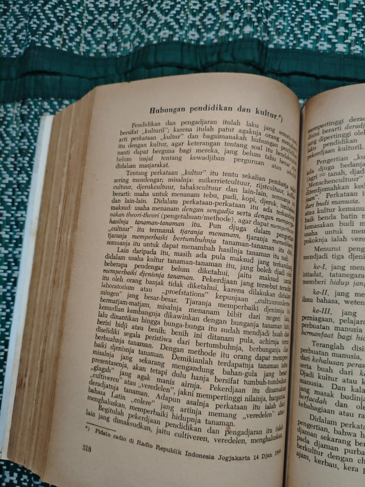
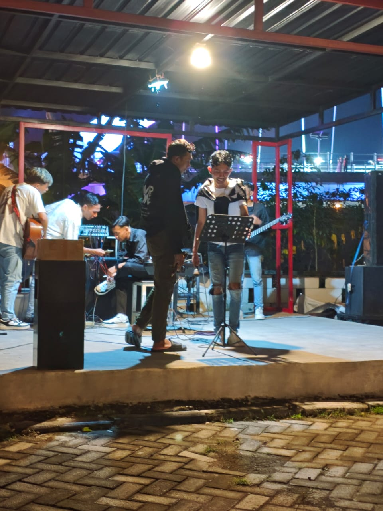

Artikel Terkait

Mei 02, 2026
Rekomendasi Buku Bacaan Santai Buat Mahasiswa IT

April 28, 2026
Memahami Konsep OOP Java Buat Pemula Biar Nggak Pusing

April 15, 2026
Menghabiskan waktu luang itu soal menyeimbangkan pikiran. Kadang aku butuh ketenangan lewat buku, kadang butuh kompetisi lewat game, dan nggak jarang cuma butuh teriak lepas lewat nyanyian. Ketiga hal ini yang bikin aku tetep waras di tengah padatnya jadwal kuliah dan rutinitas nulis *code*. Di artikel ini, aku mau *share* sedikit soal tiga hobi utama yang nemenin keseharianku.
Buatku, membaca adalah cara paling gampang buat traveling tanpa harus ke luar kamar. Entah itu tenggelam dalam alur cerita novel fiksi yang seru, atau sekadar baca-baca artikel teknologi buat nambah *insight*. Sebagai mahasiswa Informatika, *habit* membaca ini ngebantu banget pas lagi butuh referensi logik *coding* atau sekadar *stay up-to-date* sama tren *web development* terbaru.

Kalau otak udah panas, *gaming* selalu jadi jalan keluarnya. Biar tetep terhubung sama temen-temen, aku sering banget mabar buat push rank di Mobile Legends. Seru aja bisa adu strategi dan *teamwork*. Tapi kalau lagi pengen *chill*, biasanya aku buka Cookie Run: Kingdom atau jalan-jalan nyari tangkapan baru di Pokémon GO. Buatku, *gaming* itu tempat yang pas buat *refreshing* sekaligus ngelatih kecepatan mikir.
"Kadang problem solving terbaik buat error di kodingan itu ya ditinggal mabar se-match, nyanyi bareng, terus balik lagi dengan pikiran jernih."

Pernah nggak sih ngerasa tugas OOP Java nggak kelar-kelar, terus rasanya pengen teriak aja? Nah, pelarianku biasanya nyanyi. Nggak harus punya suara sekelas penyanyi profesional, yang penting bisa lepasin beban. Entah itu nyanyi random di kamar pakai playlist favorit, atau seru-seruan bareng temen-temen kampus. Abis itu, biasanya *mood* langsung balik lagi.
Semua hobi ini butuh *support system* yang pas. Laptop Lenovo LOQ andalanku selalu *ready* buat dipakai mabar atau belajar. Biar fisik tetep fit, aku juga selalu cari waktu buat cari keringat di Fitnessworks Citraland. Dan pastinya, nutup hari pakai porsi gede Ayam Geprek kesukaan atau nongkrong di Tomoro Coffee udah jadi semacam rutinitas wajib biar hidup tetep *balance*.
Hobi itu lebih dari sekadar buang waktu; itu cara kita ngerawat diri sendiri. Mau itu lewat halaman-halaman buku, menangin pertandingan di land of dawn, atau nyanyi sekeras mungkin. Selama bisa bikin kita happy dan makin produktif ngejalanin peran—kayak jadi mahasiswa atau mentor di kampus—ya enjoy aja prosesnya!
Mei 02, 2026
April 28, 2026
April 15, 2026